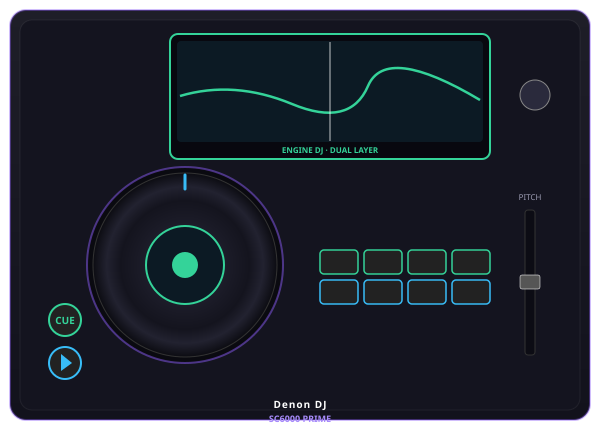

Denon DJ SC6000 Review 2026: The Ultimate Standalone CDJ Alternative?
Dual-layer playback without a laptop — with a separate mixer, accurate connections and clear Serato licensing limits.

Disclosure: This page uses affiliate links. We may earn a commission at no extra cost to you. Full disclosure →
The SC6000 is a standalone media player, not an all-in-one DJ system. It plays music without a laptop, but you still need a separate mixer, speakers and headphones. Its useful trick is dual-layer playback: one player can supply two tracks to two mixer channels. Budget for the whole rig before comparing its price with an XDJ-AZ or PRIME 4+.
SC6000 or SC6000M: choose the platter
Both have a 10.1-inch touchscreen. The SC6000 has an 8.5-inch non-motorized, tension-adjustable jog wheel; the SC6000M has an 8.5-inch motorized platter. The M is a different platter choice, not a larger-screen upgrade. Try the feel before paying for the motor.
Connections that decide the rest of your rig
Two RCA stereo output pairs and two coaxial digital outputs carry the layers to a compatible mixer. There are no XLR or HDMI outputs on the player. Use mixer line inputs for analog audio, or compatible digital inputs for coaxial audio; USB and SD are music sources, not ways to connect the player audio to a DJM mixer.
| SC6000 specification | Manufacturer-listed detail |
|---|---|
| Display | 10.1-inch HD touchscreen |
| Media | 3 USB-A drive ports, SD slot, internal 2.5-inch SATA drive bay |
| Computer / network | USB-B computer connection; Wi-Fi and Ethernet |
| Weight | 5.8 kg / 12.76 lb on the current product page; older manuals differ slightly |
| Mixer requirement | External mixer; two available channels for both layers |
| Price / availability | Check current unit price, warranty and stock; this guide does not establish production status |
Engine OS on stage, Engine DJ Desktop for preparation
Engine OS runs on the player. Engine DJ Desktop prepares and exports libraries on a computer. Check imported cues and beat grids before taking a prepared drive to a gig. Onboard analysis is useful, but there is no basis here for promising zero latency, an exact learning time or better sound than another player.
Standalone streaming includes Beatport, Beatsource, SoundCloud Go+ and TIDAL; Dropbox accesses your own cloud library. Use the linked Engine DJ matrix for current model eligibility. Apple Music and Amazon Music Unlimited are not listed for SC6000, and Spotify support is not established by that matrix. Keep owned local files as a network-independent backup.
Serato support is an accessory role
Serato lists the SC6000 as an Official Serato Accessory for USB control with Serato DJ Pro hardware. The player does not itself unlock Serato DJ Pro. Plan the supported primary hardware and any required license separately. Standalone Engine OS playback does not require Serato. We have not established official Traktor support and would not buy it on that assumption.
SC6000 versus a club player or all-in-one
Choose SC6000 when you own the mixer and want two playback layers from one player. Choose the SC6000M if the motorized feel is the point. If you want the mixer and players in one box, start with our standalone systems guide. For club practice, match the actual booth and library workflow you expect to use; a feature list cannot guarantee that a venue will have the same gear.
The cost comparison is player plus mixer plus case and cables, not one SC6000 against an entire all-in-one. There are no new measurements or first-hand performance claims in this review.
Manufacturer evidence and buying limits
Facts checked against official documentation on October 28, 2026. This is a researched buying guide, not a hands-on test. Retail prices and stock vary; confirm the exact model, installed firmware and regional service availability before buying.
Shop on Amazon
Check current Denon SC6000 price on Amazon — standalone or bundled with mixer.
Also Available on zZounds
Media player requiring a separate mixer — check current seller terms.
Frequently Asked Questions
Is the SC6000 an all-in-one system?
No. It is a standalone media player requiring a separate mixer. Its two playback layers can feed two mixer channels.
SC6000 versus SC6000M: what changes?
Both have a 10.1-inch display. SC6000 has a non-motorized jog wheel; SC6000M has a motorized platter.
Does the SC6000 unlock Serato DJ Pro?
No. It is an Official Serato Accessory. USB control requires the supported Serato DJ Pro hardware and any required license separately.
What mixer connections and USB ports does it have?
Two RCA stereo output pairs and two coaxial digital outputs feed a compatible mixer. There are three USB-A drive ports, one USB-B computer port and an SD slot. There are no XLR or HDMI outputs.
Does SC6000 support Spotify or Traktor?
We have not established official standalone Spotify or Traktor support. Do not buy on that assumption; use the linked manufacturer and Serato documentation for confirmed workflows.